Aluminium is a ~1.1 Gt CO₂e problem hiding in plain sight — and the same tonne of metal can carry a 40× carbon spread depending on one variable: the electricity behind it.
A plain-language synthesis & cost / time / solution analysis built on IAI, IEA, Mission Possible Partnership and ELYSIS data (2023–2026) — with carbon-removal context and CarbonSig modeling notes.
Bottom Line Up Front
The argument in one breath. The aluminium sector emits about 1.1 Gt CO₂e a year — ~2% of global emissions — and primary production accounts for 95% of it.1,3 Unlike steel, aluminium's carbon is not locked in the chemistry of the furnace; it is locked in the electricity grid: smelting alone consumes ~8% of global industrial power, and electricity drives more than 90% of the footprint.2,4 That is why the very same tonne ranges from under 4 tCO₂e on hydropower to over 20 on coal6,7 — and why China, which makes ~60% of the world's aluminium on a 72%-coal grid, is the lock-in to watch.2,8 The fix is a known triple play: clean power, inert anodes, and recycling — a ~$1 trillion, three-decade transition in which 70%+ of the money is power infrastructure.5
This brief mirrors our steel analysis, recast for aluminium's distinct physics. It treats the problem along the three axes a strategist controls — cost, time, and solution mix — adds the missing context on carbon removals and direct air capture (DAC), and closes with how a product-level platform (CarbonSig) lets a producer or buyer model these choices for a single smelter, product, site, or company.
The framing again treats carbon as money. From January 2026, the EU's CBAM prices the embedded carbon in imported aluminium — and because electricity is ~90% of that footprint, where you plug in the smelter becomes a tradable balance-sheet decision.11 Clean metal earns a premium; coal-locked metal carries a discount and a stranded-asset risk.
Exhibit 01 · The Problem, Sized
A tonne of primary aluminium averages ~14.8 tCO₂e (2023).1 Decomposing it reveals the strategy: the overwhelming majority is the electricity behind smelting and refining; the rest is the carbon-anode process (a 19th-century reaction that emits CO₂ directly) plus refining heat. Recycling sidesteps almost all of it.
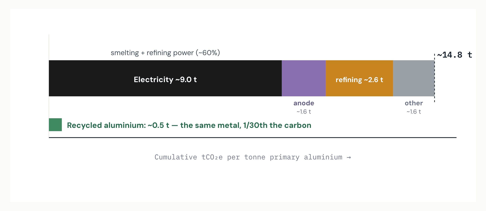
Read: Cut the electricity and you cut the problem — but the carbon anode is the irreducible process core that only inert-anode technology removes. Source: IAI 2023 intensity & unit-process data;1 electricity >90% share per Light Metal Age / ING;4,16 recycled ~0.5 t.19 Shares indicative.
Exhibit 02 · The Lock-In
Aluminium's lock-in is geographic. China makes ~60% of the world's primary aluminium, and in 2023 about 72% of its smelter capacity ran on coal (only ~19% hydro).2,16 That single fact dominates the global average. The Gulf runs on gas (~10 t), while Canada, Norway and Russia run on hydro (near-zero electricity carbon). Same metal, radically different carbon — set by the plug, not the pot.
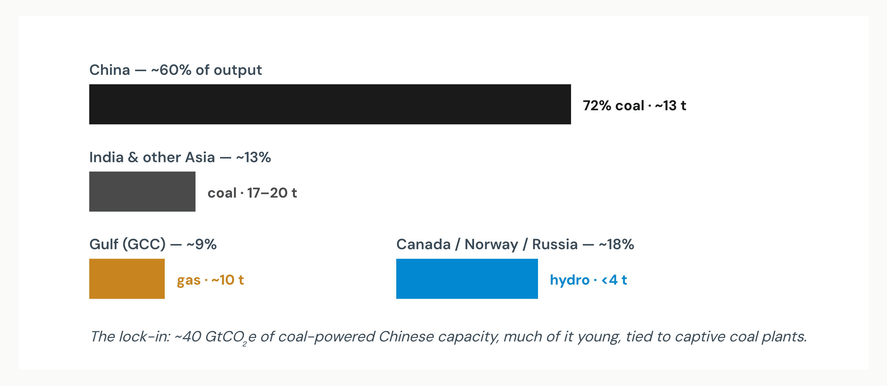
Read: Decarbonizing aluminium is mostly decarbonizing Chinese coal power — or relocating smelters to hydro/renewables (China is already shifting to Yunnan; ~29% green by 2027). Source: IEA (China ~60%);2 ING (72% coal / 19% hydro, 2023);16 intensity ranges per IAI & literature.6,17
Exhibit 03 · Why It Matters
Aluminium punches above its emissions weight on the power system. It is ~2% of global emissions, but ~4% of global electricity demand, and smelting alone is ~8% of industrial electricity.2,5 Decarbonizing aluminium therefore competes for — and depends on — the same clean electrons everyone else wants.
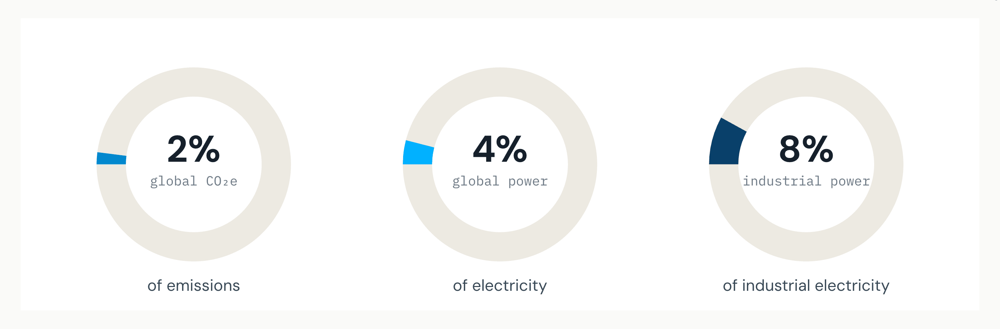
Read: Aluminium's decarbonization is bound to the speed of grid decarbonization — it cannot outrun the power sector. Source: IEA;2 MPP / ETC (~4% of electricity);5 smelting ~8% of industrial electricity.2
Exhibit 04 · The Master Insight
This is aluminium's defining fact and its biggest opportunity. The cradle-to-gate footprint of a tonne ranges from over 20 tCO₂e on coal to under 4 on hydropower — and to ~0.5 if recycled.6,7,19 No production-chemistry change is needed to capture most of the gap; you change the electricity.
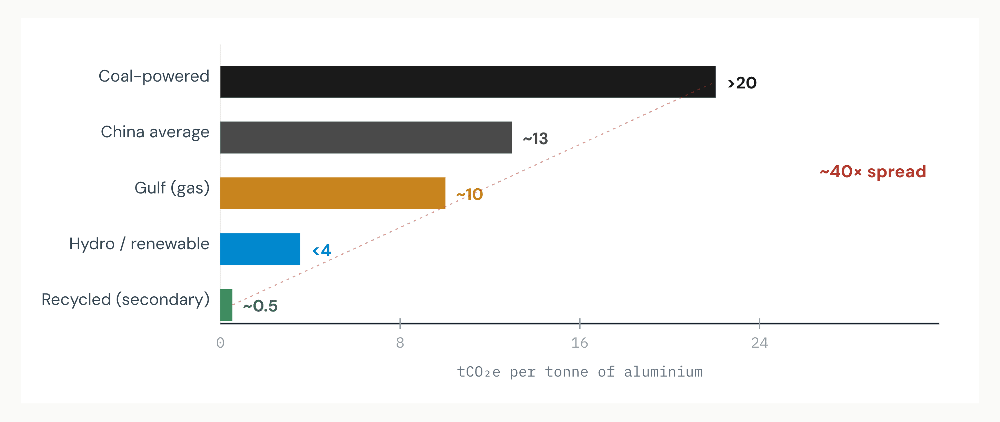
Read: A coal-to-clean power switch removes the bulk of the footprint without touching the metallurgy — the cheapest, fastest lever. Source: IAI carbon-footprint FAQs (hydro/gas/coal);6 literature 17–20 t for coal-Asia;17 recycled ~0.5 t.19
Exhibit 05 · The Solution Set
Aluminium's solutions are distinct from steel's. The ladder runs: recycling (cheapest, scrap-limited), renewable-powered smelting (the master lever), inert anodes (eliminates the direct process CO₂), green alumina refining (electric/hydrogen heat), and CCS (limited, for refining off-gas).2,5
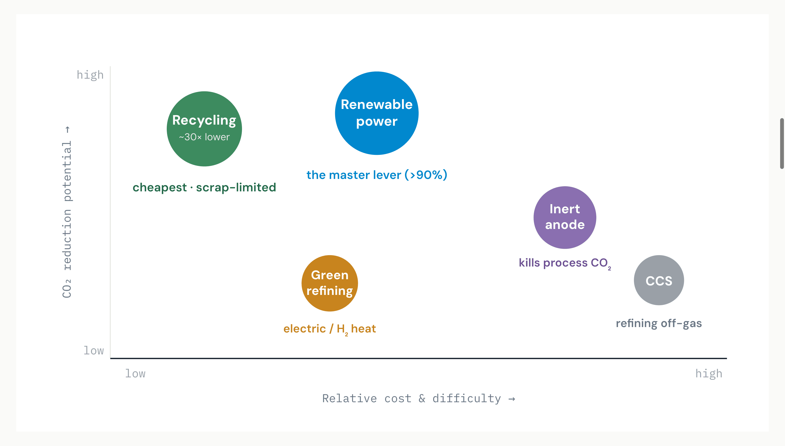
Read: Recycling + clean power do most of the work; inert anodes finish the direct-emission core; refining heat and CCS clean the residual. Source: IEA;2 MPP / ETC transition strategy;5 ELYSIS (inert anode).10 Positions indicative.
Exhibit 06 · The Pathways
As with steel, the choice is not the destination but the route and the bill. Under business-as-usual, aluminium emissions could rise up to +90% by 2050; the Mission Possible Partnership net-zero pathway cuts them ~95%.5,33
Source: MPP / Energy Transitions Commission "Making Net-Zero Aluminium Possible";5 BAU +90% & ~37 Gt vs ~15 Gt Paris budget per MPP/AlCircle.33,34
McKinsey-style read Aluminium's transition front-loads cheap power-switching this decade and back-loads capital-heavy process tech (inert anodes) next decade — the mirror image of steel's "redirect now, electrify later," but driven by electrons rather than molecules.
Exhibit 07 · The Prize
On a business-as-usual path, the sector emits roughly 37 GtCO₂e cumulatively to 2050 — more than double the ~15 Gt that a Paris-aligned aluminium budget allows.34 The net-zero pathway closes that gap with a ~95% intensity cut, even as demand grows.
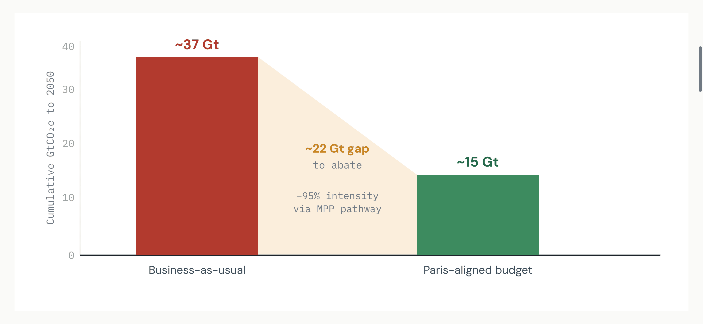
Read: More than half of BAU emissions must be eliminated — achievable but only with early power-switching plus the new process technologies. Source: MPP STS (BAU ~37 Gt; Paris budget ~15 Gt; −95%).5,34
Exhibit 08 · Where The Cuts Come From
Breaking the ~95% reduction into levers shows the priority order. Clean power is the dominant wedge (because electricity is >90% of the footprint), followed by recycling & material efficiency, then inert anodes for the direct process core, with green refining and CCS cleaning the residual.5
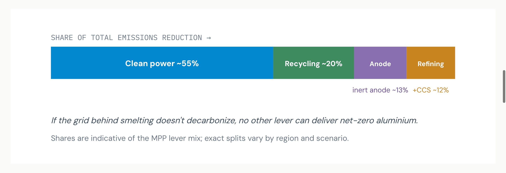
Read: Power-switching is necessary and nearly sufficient; the other levers handle what electricity cannot. Source: MPP / ETC lever framing;5 electricity >90% of footprint.4 Indicative shares.
Exhibit 09 · The Money
MPP estimates ~$1 trillion over three decades to decarbonize primary aluminium, and the striking detail is the allocation: more than 70% is supporting infrastructure, primarily power supply — not the smelters themselves.5 The aluminium transition is, financially, an electricity transition.
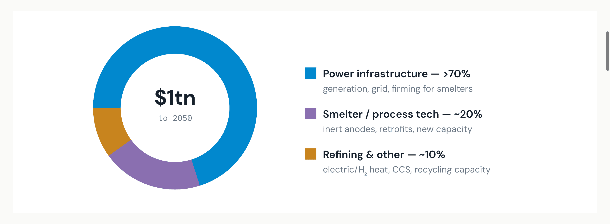
Read: A producer's decarbonization budget is dominated by securing clean electricity — PPAs, captive renewables, grid access — not by the pot line. Source: IAI / MPP: ~$1tn, >70% for power infrastructure.5 Sub-splits indicative.
Exhibit 10 · Time
The pathway has a clear tempo. This decade belongs to power-switching — the cheapest, ready-now cuts. The 2030s–40s bring the capital-intensive process technologies (inert anodes, green refining) to market.5,10 ELYSIS reaching a commercial-size cell in late 2025 puts the back-half tech roughly on schedule.10
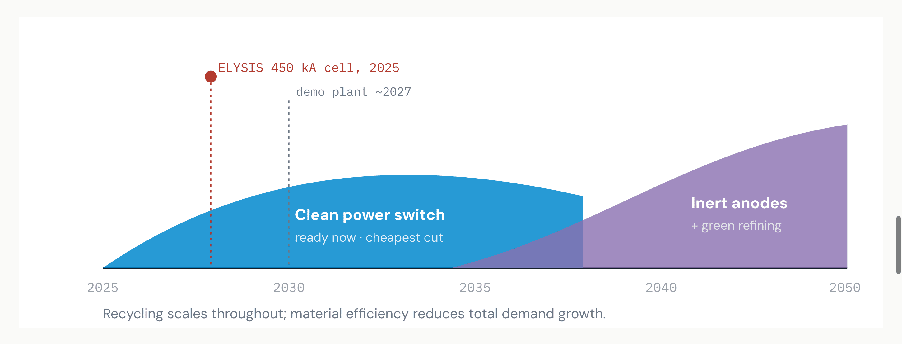
Read: Don't wait for inert anodes to start — power-switching delivers most of the cut now; process tech finishes the job. Source: MPP STS sequence;5 ELYSIS commercial-cell milestone Nov 2025, demo ~2027, maturity end of decade.10
Exhibit 11 · The Circular Lever
Secondary aluminium emits ~0.5 tCO₂e/t vs ~14.8 for primary — a ~30× saving — and already supplies ~35% of metal.1,19 It is the cheapest tonne in the system, but bounded by scrap availability and quality (alloy contamination). The can sector targets 90% recycling and 85% recycled content by 2030.29
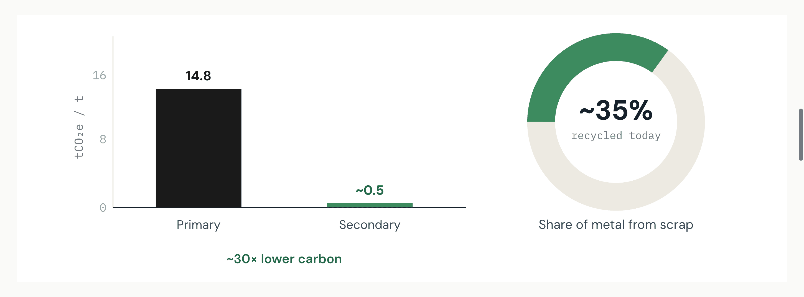
Read: Every point of recycled share lowers the sector average — but scrap supply caps how far it can go, so it complements rather than replaces clean primary metal. Source: IAI (35% recycled; intensities);1,11 recycled ~0.5 t;19 can targets per WEF/Ball-Novelis.29
Exhibit 12 · The Playbook
Whatever the scenario, the aluminium playbook converges on three moves — the order matters, because each handles a different slice of the footprint.5
Source: MPP / ETC Sector Transition Strategy;5 carbon anodes ~one-sixth of new-aluminium GHG;10,26 recycled ~30× lower.19
The contrast with steel Steel's lever is the production route (swap the furnace). Aluminium's is the power contract (swap the electrons) plus a once-in-140-years anode change. Steel decarbonizes by rebuilding plants; aluminium decarbonizes mostly by rewiring them.
Exhibit 13 · Carbon Removals & DAC
Aluminium's residual emissions are smaller and more concentrated than steel's: chiefly alumina-refining heat and any process CO₂ not eliminated by inert anodes. The honest hierarchy avoids first and removes last. Notably, pairing renewable power with sustainable biomass for refining heat can push parts of the chain toward carbon-negative.17
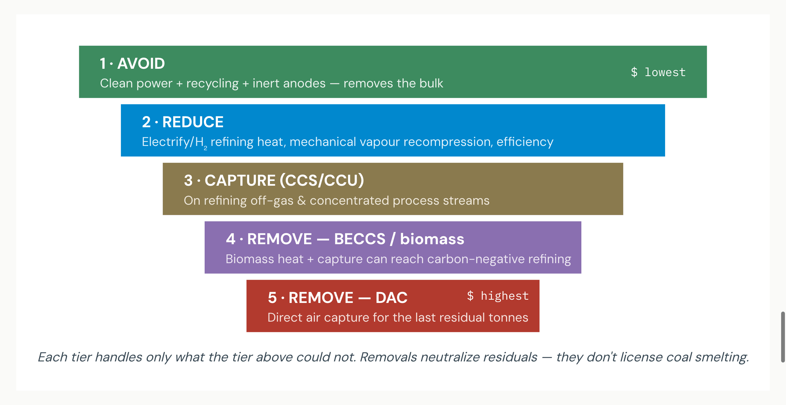
Read: Because clean power + inert anodes can take aluminium close to zero, the removal burden is smaller than steel's — DAC is a thin backstop for the last residual. Source: IEA refining options (electric boilers, MVR, hydrogen);2 carbon-negative biomass+renewables route.17 DAC tier is analytical context, not a single-source claim.
Carbon-as-money lens Price each lever. Recycling and clean-power switching buy avoided tonnes cheaply; inert anodes retire the process core; engineered removals — BECCS and especially DAC — are the priciest tonnes and should cover only the irreducible residual. Under CBAM, a verified low-carbon tonne earns a premium; a coal tonne carries a border-cost discount. The residual, covered by a verified removal certificate (EAC), is what separates a credible net-zero claim from greenwash.
Exhibit 14 · Risk
The pathway is technically and economically possible5 — but four barriers govern feasibility, each distinct and together exhaustive of the execution question.
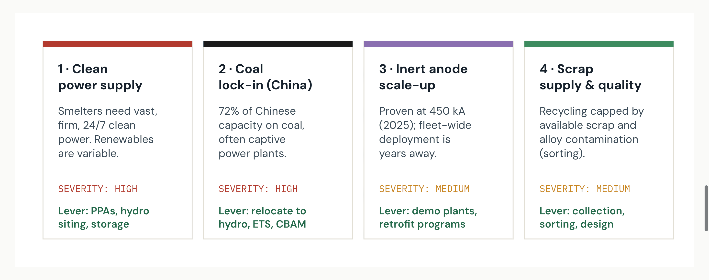
Read: The two HIGH risks are both about electrons — getting clean ones and escaping captive coal. CBAM is the tailwind that prices the difference. Source: IEA, MPP, ELYSIS;2,5,10 China coal share per ING.16
Exhibit 15 · From Macro Pathway to the Plant Floor
The MPP and IAI work answers the question at global / sector resolution. A producer, fabricator, or automotive buyer needs the same logic at smelter, product, site and company resolution — with verifiable, CBAM-ready numbers. CarbonSig digitally twins the aluminium value chain — bauxite mining → alumina refining (Bayer) → Hall-Héroult smelting → casting → product — and lets every node be re-priced for carbon, cost and CBAM.12
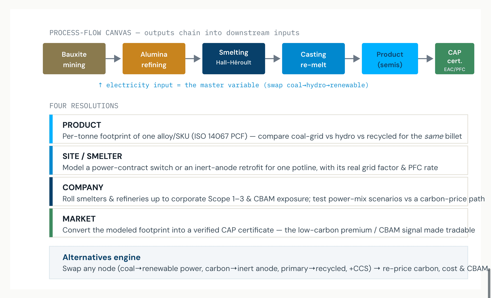
How it maps to the pathway: the power switch (Exhibit 04, 08), inert anode (Exhibit 05, 10) and recycling (Exhibit 11) become editable nodes; CBAM & PFC reporting (Exhibit 03) is captured natively; the output is an auditable, ASI/CBAM-ready certificate. CarbonSig platform notes — aluminium value chain per CarbonSig brochure.12
The synthesis. The sector consensus (IAI, IEA, MPP) is clear: aluminium can cut ~95% by 2050, and the dominant lever is clean power — ~70% of a ~$1 trillion bill.1,2,5 CarbonSig operationalizes that at the resolution a buyer or financier can transact on — the smelter, the product, the company — converting a modeled tonne of avoided or removed carbon into money.
Sources & Authorities
Exhibits 13 (DAC tier) and 15 (CarbonSig modeling stack) are analytical context contributed by this brief, not single-source claims. Per-tonne breakdowns (Exhibit 01), lever shares (Exhibit 08) and investment sub-splits (Exhibit 09) are indicative syntheses of the cited ranges; the headline figures (1.1 Gt, 14.8 t/t, ~$1tn, >70% power, −95%, 40× spread) are sourced as cited. Reference 9 reserved for parity with the steel brief's numbering.